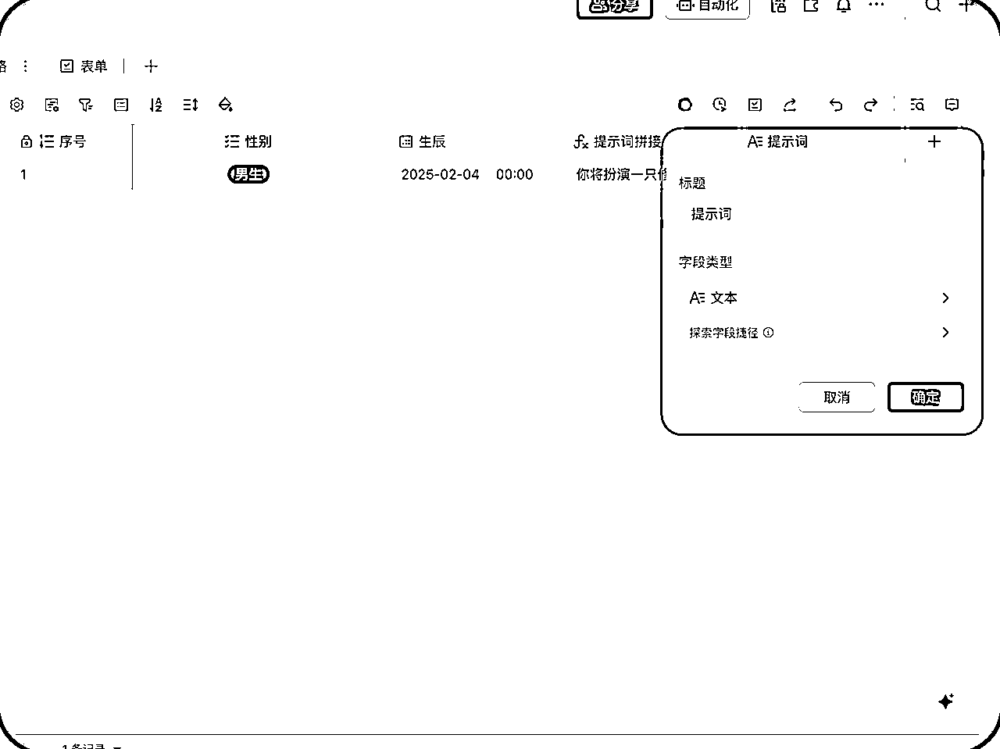

来源：https://r1vak6ov9p.feishu.cn/docx/MXscdrpH9oEvHOxBK3Zcgf8fnhf
写在前面：
如果说之前的 ChatGPT 和 Deepseek 这样的 AI 助手工具是普通人的 AI 1.0 时代，那 Deepseek+多维表格就是普通人的 AI 2.0 时代。
Deepseek+多维表格能做什么：从线上电商直播带货到线下门店经营管理；从自媒体笔记短视频创作到 AI 投资理财；从学术研究到工作提效等各种场景都能丝滑接入。
多维表格+Deepseek 更是一人公司的神器，它的批量化、业务化、结构化、响应速度快，让你 3 天的活，3 分钟搞定，让你节省出几倍甚至几十倍时间和金钱。
Deepseek+多维表格就是普通人逆天改命的机会，借用申公豹的一句话：“一生中能改变命运的机会可不多呀”，Deepseek+飞书多维表格就是一个，一定要把握住！！！
讲到知识点：多维表格自动化工作流；多维表格产品封装；Deepseek 等字段捷径能力；AI 表格公式能力。
结尾彩蛋：我把最近整理拆解的几十套模版提供给大家，免费自取～～
制作周期：2 月 26 日一个午饭时间
项目上线时间：2 月 26 日中午～晚上
传播渠道：微信（用了 3 个微信号，一共 1.2w 的好友，以及我的 6 个 AI 微信群）
数据结果：截止目前 2 月 26 日晚 23 点，共有 3233 人参与
玩法路径：
这个项目是我从 2 月 26 日上午开始做，中午做出来，然后策划了一下简单的玩法路径方案，就开始上线，上图是昨天晚上模版带来的参与数据。
我用了 3 个微信号，一共 1.2w 的好友，以及之前沉默的我的 6 个 AI 社群，进行传播，整体参与度还很高，而且很多朋友和我咨询这个玩法以及模版制作，于是就有了这个教程。如果哪里讲的不明白或者不懂，留言给你解答。
身为多年飞书表格资深用户，我将从
项目拆解→→→手把手教学（如果从构思到落地制作一个用户可交互的模版）→→→模版分享
三个版块，给大家进行讲解演示，每一版块都可以单独去看，想看哪块看哪块。教学板块主要是讲如何建立一个有 AI 能力的多维表格，然后把多维表格包装成一个产品让用户去使用的详细步骤。我会从如何利用里面的插件、公式、Deepseek 能力等功能，手把手教大家搭建一个好玩实用的多维表格，如何预埋引流的钩子，做一个微型私域裂变。并且让用户，就是其他人参与进来，完成一个从输入到输出的完整产品闭环。尽量把每一步都手把手的详细讲到。
最近在用飞书多维表格+DeepSeek 的玄学测试模板时发现，这种玩法突然就火起来了。其实年轻人迷玄学这事儿吧，本质上就像在火锅店用签筒摇号——生活压力太大，摇个「职场运势」就当心理马杀鸡了。
举个真实场景：我朋友小沈用飞书表格+DeepSeek 做了个「MBTI 加强版」测试模板，一晚上批量生成几百个性化解读。这可比传统问卷公司快多了，关键是还能自动用飞书把测试结果同步到客户。现在年轻人要的哪是真算命啊？他们只是想找个有趣的社交货币——测试结果往朋友圈一发，瞬间收获「哇你居然是紫微星转世」的点赞狂欢。
有意思的是，这类测试最抓人的三个点刚好对应着飞书+DeepSeek 的三大绝活：
批量造梗
用字段捷径配置好「水逆预警」「桃花指数」等关键词，DeepSeek 能自动生成 500 条不重样的玄学文案
智能读心
当用户把「最近总失眠」填进表格，系统会自动关联星座运势、塔罗建议等字段
社交裂变
生成的结果直接带分享按钮，多维表格的仪表盘功能还能看到「天蝎座测试被转发最多」这种宝藏数据
说到底，年轻人要的不是封建迷信，而是想解放生活和工作的压力。就像用飞书表格+AI 不是真为了搞自动化，而是给焦虑生活装了个「Ctrl+Z」的撤销键，点一下就能看到平行宇宙里的另一种可能，这可比烧香拜佛赛博多了，所以，这个测试产品一丢进朋友圈，数据直接炸裂起飞，多亏了大家的工作压力大啊，哈哈哈哈。
废话说多了，现在开始介绍下产品，这个产品其实分为两个版本，一个是 1.0 版本，就是我在最近拆解多维表格模版时候，发现的这么一个有意思的模版，《🔮 DeepSeek - 2025 运势赛博占卜 🔮》作者是：飞书的 PM@谈薇，如果最近深度体验多维表格的朋友，应该见过这个版本。我就拿这个版本，在几个小群，发了一波测试，短短十几分钟，就收到了很多用户体验反馈。马上，我就在这个基础上，用了一中午时间，调了一个 2.0 版本，《🔮 赛博魔女 🔮 （升级版本） 》就是目前这个数据的版本。
补充赛博魔女测试连接：《🔮 赛博魔女 🔮 （升级版本） 》
↑↑↑↑体验直接点击填写内容即可↑↑↑↑（本月已达上限，无法测试啦，抱歉）
Before 1.0 版本
After 2.0 版本
Before 1.0 版本
After 2.0 版本
在新建飞书多维表格之前，我们要知道，我们到底要一个什么样的产品，是要好玩的，还是有流量的，还是变现能力强的，所以第一步，就是脑暴方案想法，然后用秘塔搜索去搜一下内容，比如搜小红书/知乎热词；抓一些年轻人吐槽"玄学测试类的"的痛点；这里我就就让秘塔给我整理一下玩法和一些高频的词，让这一步的内容，打开的的思路
通过秘塔搜索的结果，我选择了一些我感兴趣的词和内容，把他们摘录出来，作为这个产品的脑暴创意，下面是部分感兴趣的秘塔结果摘录示意：
挖宝玄学、祈福水晶、功德电子木鱼、好运壁纸设计、八字、姻缘、面相、摇签、紫微斗数、甲子易道、神算喵、乾坤爻
我选择了几个词，挖宝、水晶、神算喵、乾坤爻，就拿这四个词，来延展我的方案
看到水晶、挖宝这两个词，我想到前段时间，有一个很火的玩法，就是用 Deepseek 通过用户的出生日期和性别，生成一个运势报告，并且推荐比如黑曜石、海蓝宝、黄水晶等来提升个人能量的玩法，而且这个超级火，但是有个言论就是 Deepseek 把命理师干失业了，把 1688 水晶卖断货了的言论，所以我打算结合水晶，做一个飞书多维表格的测试产品，这个产品现在就是我一边写、一边构思、一边记录，现在开始吧。
接下来，我让元宝 Deepseek 的深度思考+联网功能给我产出一个方案，下面是我给他的 prompt，等待输出一个方案
方案生成，我选择了里面我可用的一些观点，进行人工的拼接（就是我来拼接），得到一个《神算水晶喵》这个方案，《神算水晶喵》是一款融合 AI 技术与玄学创意的轻量化运势产品，用户输入性别和生辰后，系统通过 DeepSeek 定制化 prompt 解析八字五行，从财运、事业、感情三大维度生成 2025 年运势报告（含精准运势暴击月份预警），并基于命理特征推荐一款能量水晶，全程以“神算喵”的毒舌人设输出结果，用“赛博算命+玄学玩梗”的方式满足年轻人对运势探索的娱乐需求，实现从传统占卜到社交裂变的趣味性设计。
通过刚刚的整理的报告，再回到 Deepseek 里面，把这个发散的结果，提取关键词，变成一个可用的飞书表格模版的工作流：
你看，这是一个线性的工作流，每一个流程就是多维表格的一列，一个工作节点。
其实水晶三个节点这里可以简化，只要我确定几个水晶样式，用 ai 生成固定的水晶样式，把样式上传到水晶节点，最后让输出端通过工作流调取就可以得到有质量保证的水晶，这里我是为了让大家更熟悉多维表格的字段捷径的更多使用场景，加了水晶的信息提取、提示词生成、AI 生图。
到这里，一个想要的整体方案就在这个流程图上面呈现出来了，接下来，进入飞书多维表格，把这些节点加入多维表格，进行配置。
下面是操作步骤，这个时候，建议打开多维表格和我一起操作起来，一步步的教你如何通过多维表格建立这个《神算水晶喵》：
打开飞书之前，我们先写出这个产品的提示词，还记得上面提到的方案简介吧，我把简介稍微手动进行了调整，变成一个初稿的 Prompt。
“你是一只喵喵，因修成正果得道成仙，现在叫做神算喵，你精通周易八字五行以及水晶能量，你通过用户提供的名字、性别、生辰，解析用户的八字五行，从财运、事业、感情三大维度生成用户 2025 年运势走向（含精准运势暴击月份预警），并基于用户命理特征，推荐 1 款水晶对用户进行加持，并且告知用户这个水晶与用户八字五行的解读，你全程以“神算喵”的毒舌人设输出结果”。
就用这段 Prompt，进行优化，把变成一个专业的符合我们这个产品的 Prompt。
这里又用到了另外一个工具，是目前我使用的提示词优化做的最好的工具，也是字节的产品，在火山引擎里面叫《Prompt 优解》，大家等于火山引擎就能使用，目前也是免费用，看图我们直接操作。
《Prompt 优解》工具链接：https://console.volcengine.com/
优化步骤：
打开火山方舟→展开左侧侧边栏导航→选择 Prompt 生成→在你的任务输入初稿 Prompt→点击生成→完成
优化结果：（结尾加了个引流钩子）
优化后的 Prompt
你将扮演一只修成正果得道成仙的喵喵，名为神算喵。你精通周易八字五行以及水晶能量。根据用户提供的信息，完成以下任务：
用户名字：
用户性别：
用户生辰：
具体任务如下：
你全程要以“神算喵”的毒舌人设输出结果。在回复时，先在<思考>标签中简要说明你对八字五行的分析思路、运势判断依据和水晶推荐理由等。然后在<结果>标签中输出最终的结果，包括八字五行解析、2025 年运势走向、水晶推荐及解读。
<思考>
[在此简要说明分析思路、判断依据和推荐理由等]
思考>
<结果>
[在此输出八字五行解析、2025 年运势走向、水晶推荐及解读]
结果>
结尾加一个固定话术，“更多深度解读答疑加微信：xctx8426 为你解答
然后，我们要打开飞书，用网页端客户端都可以。
然后点击左边列表的多维表格→新建多维表格。（也可以去云文档里面在右上角新建→选择多维表格）
终于进到多维表格里面了，给大家看个大图，大家自己也打开多维表格跟我操作一下，这会可以仔细看看多维表格和普通表格差异化在哪里，看完后我们进入正题，开始编辑多维表格。
双击第 1 列的文本→改标题为序号→点击字段类型→选择自动编号→点击确定
双击第 2 列人员→改标题为姓名→点击确定
双击第 3 列单选→改标题为性别→字段类型→多选→点击添加选项（点两下）→输入框分别输入[男生][女生]→确定
双击第 4 列日期→改标题为生辰→字段类型→日期→日期格式 2025-01-30 14:00（选带时间的）→确定
双击第 5 列附件→改标题为提示词生成拼接→字段类型→公式→点击编辑公式→进入编辑公式页面
知识点来喽，AI 生成公式，我对表格中的公式真的一窍不通，但是飞书多维表格厉害之处就是他接入了 AI 能力，即使不会公式，只要把你的想要实现的结果输入自然语言告诉 AI，AI 就能让自然语言变成表格可用的公式，对于一个一点公式也不认识的人，当输出公式的那一刻，AI 真的超酷！！！
继续操作，我对 AI 公式输入了一个指令，我给了他一个我要的格式，让他去拼接我们之前的三个列的数据提取成一句话，然后又加入了第一步我们优化生成的 Prompt，让这个公式直接生成完整的 Prompt，最后点击确认，提示词拼接就做完了。我在下面高亮部分贴出来了，大家可以看截图或者高亮部分。
我对 ai 生成公式输入的指令：
CONCATENATE（"你将扮演一只修成正果得道成仙的喵喵，名为神算喵。你精通周易八字五行以及水晶能量。根据用户提供的信息，完成以下任务："，"用户名字是："，[姓名]，"，用户性别是："，[性别]，"，用户生辰是："，TEXT（[生辰]，"YYYY/MM/DD"），"。"，"具体任务如下：
1. 解析用户的八字五行。
2. 从财运、事业、感情三大维度生成用户 2025 年运势走向，包括精准运势暴击月份预警。要给出丰富、全面的回答。
3. 基于用户命理特征，推荐 1 款水晶对用户进行加持，并告知用户这个水晶与用户八字五行的解读。
你全程要以“神算喵”的毒舌人设输出结果。在回复时，先在<思考>标签中简要说明你对八字五行的分析思路、运势判断依据和水晶推荐理由等。然后在<结果>标签中输出最终的结果，包括八字五行解析、2025 年运势走向、水晶推荐及解读。
<思考>
[在此简要说明分析思路、判断依据和推荐理由等]
思考>
<结果>
[在此输出八字五行解析、2025 年运势走向、水晶推荐及解读]
结果>
结尾加一个固定话术，“更多深度解读答疑加微信：xctx8426 为你解答”"）
点击加号新建列→改标题为提示词→点击字段类型→选择文本→点击确定
这一步是为了 Deepseek 提取以及后面的提醒工作流做准备做准备

点击加号新建列→改标题为 Deepseek→鼠标悬浮字段捷径→搜索栏输入 Deepseek→选择 Deepseek R1→配置指令选择[提示词]→获取更多信息→打开输出结果→打开自动更新→点击确定→仅保存配置
这时候后面会自动生成 Deepseek 输出结果列
点击加号新建列→改标题为水晶种类提取→鼠标悬浮字段捷径→搜索栏输入信息提取→字段选为 Deepseek 输出结果→提取信息输入“仅提取信息中水晶品种”→确定→仅保存配置
点击加号新建列→改标题为水晶提示词→鼠标悬浮字段捷径→搜索栏输入 Deepseek→选择 Deepseek R1→配置指令选择[水晶种类提取]→自定义要求输入 Prompt→打开输出结果→打开自动更新→点击确定→仅保存配置
水晶提示词：
根据提取的水晶类型，写一个生成该类型水晶图片的提示词，画面主体：一颗 [具体形状，如圆形、方形、心形等] 的 [宝石名称，如钻石、翡翠、红宝石等]，宝石表面 [有无特殊纹路，如螺旋纹、星芒纹等]，[有无附加装饰，如镶嵌在黄金底座、搭配精致链条等]。
画面风格：[写实风格 / 奇幻风格 / 赛博朋克风格 / 卡通风格等]。
色彩搭配：[宝石主体颜色，如翠绿、嫣红、湛蓝等] 为主要色彩，[光芒色彩，如暖黄色光、青白色光等] 用于表现光芒。
光影效果：[光源方向，如顶部打光、侧光等] 照射宝石，营造出 [柔和阴影 / 清晰硬朗阴影]，高光部分 [明亮闪耀 / 微微泛光] 。
点击加号新建列→改标题为水晶生成→鼠标悬浮字段捷径→图片生成→配置提示词[水晶提示词输出结果]→配置指令选择[水晶种类提取]→自定义要求输入 Prompt→打开自动更新→点击确定→仅保存配置
点击加号新建列→改标题为生成状态→字段类型→单选→点击添加选项→输入框分别输入[生成完成]→确定
到这里表格就配置完成，下一步，就是配置自动化工作流，有了工作流，我们就能让这个产品跑起来了
自动化工作流，这里一共设置了 3 个自动化工作流子流程，组合成一个主流程，首先，我们先创建一个工作流，选择从空白开始
当新增/修改用户记录，满足拼接提示词记录不为空时，工作流会把拼接提示词的内容，提取至提示词列表，然后在添加一个发送消息的工作流，让记录这条信息的用户收到一个记录成功的反馈。
新增/修改用户记录→提示词拼接不为空
修改记录→满足第 1 步条件→提取记录至提示词
发送飞书消息→选择多维表格助手发送→接收方选择之前步骤数据→选择新增/修改记录满足添加（点继续）→选择姓名→输入你的个性化标题和文案内容，里面添加用户姓名配置和接收方配置同样操作→打开工作流开关
设置完成后，记得开启工作流，左上角开关开启，这里比较复杂，如果有问题，留言解答～
当新增/修改用户记录，满足 Deepseek 输出结果页和水晶图生成的记录不为空时，修改生成状态记录为生成完成，可以继续后续流程。
新增/修改用户记录→Deepseek 输出结果不为空
添加修改记录→设置字段值生成状态→保存并启用→打开工作流开关
当修改记录满足生成状态有变更，进行条件判断，当满足修改记录生成状态的条件等于生成完成时，添加一个发送消息的工作流，让记录这条信息的用户收到一个产品测试落地页
新建表单→修改表单选项→修改表单主题→发布
发不完，大家就可以吧链接或者二维码发给身边的朋友进行测试了
测试结果
测试链接：💎🐱神算水晶喵🐱💎 模版 体验链接 大家可以点击链接填写信息进行测试～
模版链接： 免费自取
有一个小遗憾，原计划要呈现的结果是水晶图+解析报告，但是水晶图片的调取有问题，暂时未解决，后续解决更新模版